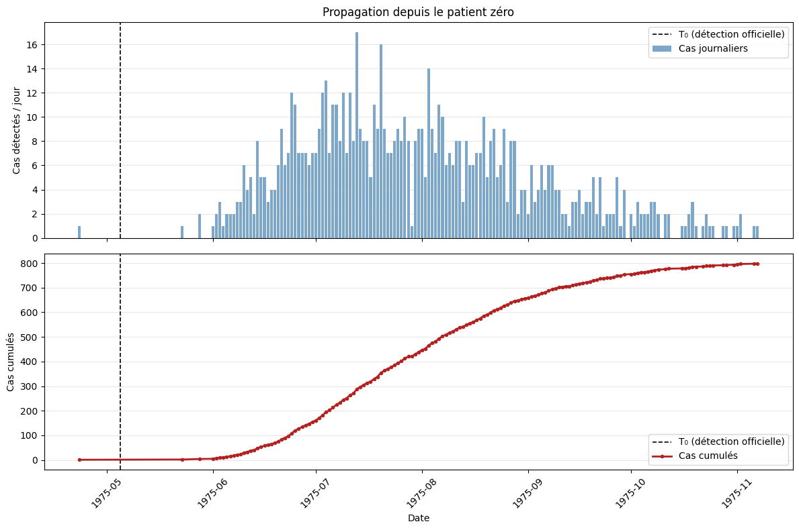

ID : ---
En attente de chargement des données...
Mai 1975. Une étrange série de syndromes cliniques non identifiés frappe les services d'urgences du pays. Les rapports s'accumulent mais restent noyés dans la masse des diagnostics quotidiens de routine. Votre mission est de remonter la piste de la contamination pour localiser le Patient Zéro, l'épicentre originel, afin de comprendre les mechanisms de diffusion de cette menace.
Nom de code : Nova-virus
Période d'incubation : 2 à 4 semaines (Asymptomatique complet au départ).
Premier foyer suspecté : Région de Karovia, à partir de mars 1975.
Détection officielle : Un test biologique de certification a été validé le 05/05/1975 (Date repère T₀). Avant cette date, la maladie n'était jamais explicitement mentionnée sur les diagnostics.
Voici la courbe des infections du Nova-virus détecté tel quel dans les hôpitaux français:

Le terminal d'enquête scanne de façon sémantique l'anamnèse des comptes-rendus médicaux. Pour isoler les pistes complexes de manière chirurgicale, apprenez à manipuler notre moteur d'analyse à l'aide de ces formats types :
Une section regroupe des expressions similaires. Si au moins un des termes indiqués est détecté, la section passe au vert.
Paris , LilleIdéal pour écarter le "bruit" ambiant (fausses alertes, examens normaux). Rencontrer l'un de ces mots rejettera immédiatement le fichier complet.
Choc frontalPar défaut, le moteur cherche les critères sur l'ensemble du rapport textuel. Assigner le même Groupe (ex: Groupe 1) à deux sections distinctes force la validation de ces critères au sein d'une seule et même phrase autonome.
VoitureAcheter
Si le mot "Acheter" était en Phrase 1 et "Voiture" en Phrase 2, ce compte-rendu aurait été écarté car l'association n'aurait pas été commise dans la même phrase.
COMPTE-RENDU CONSERVÉ (ASSOCIATION PHRASE VALIDÉE)